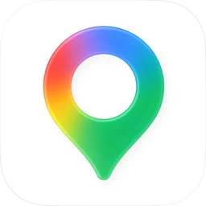
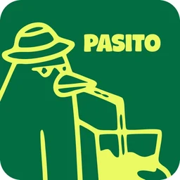

Where to eat
Pick what you're in the mood for.
Where to explore
The must-dos, barrio by barrio. The map shows where each one sits in the city.
A night out, the Argentine way
Fair warning: nobody goes out early here. If you arrive at a club at midnight it will be empty. This is how a normal night goes.
- 10 PM – 1/2 AM
La previa
Pre-drinks at someone's place. Music, friends, and fernet con Coca (try it at least once). This is half the fun of the night.
- 1/2 AM
Leave for the boliche
Take a taxi or an app as a group. Lines are normal; arriving before 1 AM is too early.
- 2 AM – 6 AM
Boliche
Dance until closing. Reggaeton and cachengue (Argentine party mix) are everywhere, and electronic music at the big clubs.
- 6 AM
Post-boliche food
A McDonald's run, a choripán from a street cart, or a pancho (hot dog). Then sleep until lunch.
Bars for the previa or a calmer night
Boliches: the best ones
More boliches
Tips: bring your ID or passport (they check), keep your phone in a front pocket, and always get home by taxi or app.
Apps
The ones worth downloading before you land.
Getting around
Uber, Cabify and DiDi are ride apps. Compare them, prices change a lot.
- Uber
- Cabify
- DiDi
- MoovitPublic transport app: tells you which bus, subway or train to take to get anywhere.

Google MapsFor walking directions and finding places. It also shows bus and subway routes.
Walking

PasitoFree Argentine app that turns your steps into rewards: walk, earn points and trade them for coffee, wine or movie tickets at places around the city.
Food
- PedidosYaDelivery app.
- RappiDelivery app.
- CheafLike Too Good To Go: surprise bags of leftover food from supermarkets, bakeries and cafés at half price or less. You pick them up the same day.